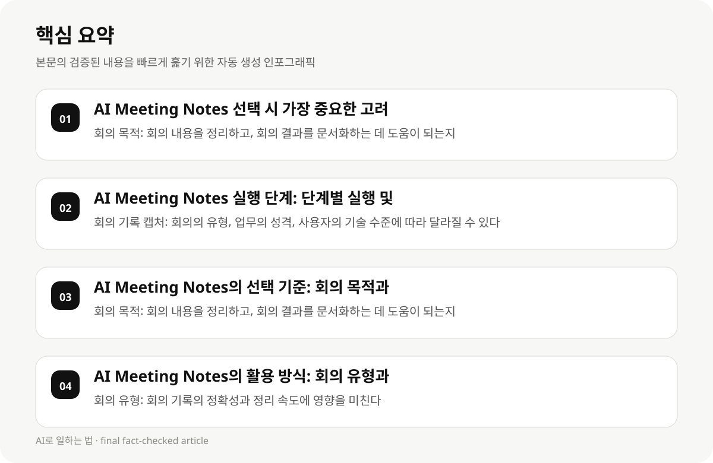

AI Meeting Notes 선택 시 가장 중요한 고려 사항 #
AI Meeting Notes를 선택할 때 가장 중요한 고려 사항은 회의의 목적, 업무의 중요성, 사용자의 기술 수준, 회사의 업무 환경이다. 회의의 목적은 회의 내용을 정리하고, 회의 결과를 문서화하는 데 도움이 되는지, 업무의 중요성은 회의 내용을 정리하는 데 얼마나 중요한지, 사용자의 기술 수준은 AI 도구의 사용 용이성과 기능의 맞춤화에 영향을 미치는지, 회사의 업무 환경은 AI 도구의 사용 가능성과 적합성에 영향을 미친다.
- 회의 목적: 회의 내용을 정리하고, 회의 결과를 문서화하는 데 도움이 되는지
- 업무 중요성: 회의 내용을 정리하는 데 얼마나 중요한지
- 사용자 기술 수준: AI 도구의 사용 용이성과 기능의 맞춤화에 영향을 미친다
- 회사 업무 환경: AI 도구의 사용 가능성과 적합성에 영향을 미친다
AI Meeting Notes 실행 단계: 단계별 실행 및 시간·비용 절감 #
AI Meeting Notes의 실행 단계는 회의 기록을 캡처하고, 회의 내용을 정리하여 업무 프로세스에 적용하는 단계이다. 회의 기록 캡처는 회의의 유형, 업무의 성격, 사용자의 기술 수준에 따라 달라질 수 있으며, 시간·비용 절감은 회의 기록의 정확성과 정리 속도를 고려하여 구체화할 수 있다.
- 회의 기록 캡처: 회의의 유형, 업무의 성격, 사용자의 기술 수준에 따라 달라질 수 있다
- 시간·비용 절감: 회의 기록의 정확성과 정리 속도를 고려하여 구체화할 수 있다
- 업무 프로세스 적용: 회의 내용을 기반으로 업무 문서를 생성하여 업무 효율성을 높일 수 있다
AI Meeting Notes의 선택 기준: 회의 목적과 업무 환경에 맞춘 도구 선택 #
AI Meeting Notes의 선택 기준은 회의 목적, 업무의 중요성, 사용자의 기술 수준, 회사의 업무 환경에 따라 달라질 수 있다. 회의 목적은 회의 내용을 정리하고, 회의 결과를 문서화하는 데 도움이 되는지, 업무의 중요성은 회의 내용을 정리하는 데 얼마나 중요한지, 사용자의 기술 수준은 AI 도구의 사용 용이성과 기능의 맞춤화에 영향을 미친다, 회사의 업무 환경은 AI 도구의 사용 가능성과 적합성에 영향을 미친다.
- 회의 목적: 회의 내용을 정리하고, 회의 결과를 문서화하는 데 도움이 되는지
- 업무 중요성: 회의 내용을 정리하는 데 얼마나 중요한지
- 사용자 기술 수준: AI 도구의 사용 용이성과 기능의 맞춤화에 영향을 미친다
- 회사 업무 환경: AI 도구의 사용 가능성과 적합성에 영향을 미친다

AI Meeting Notes의 활용 방식: 회의 유형과 업무 성격에 맞춘 활용 #
AI Meeting Notes의 활용 방식은 회의의 유형, 업무의 성격, 사용자의 기술 수준에 따라 달라질 수 있다. 회의의 유형은 회의 기록의 정확성과 정리 속도에 영향을 미친다, 업무의 성격은 회의 내용의 중요성과 정리 용이성에 영향을 미친다, 사용자의 기술 수준은 AI 도구의 사용 용이성과 기능의 맞춤화에 영향을 미친다.
- 회의 유형: 회의 기록의 정확성과 정리 속도에 영향을 미친다
- 업무 성격: 회의 내용의 중요성과 정리 용이성에 영향을 미친다
- 사용자 기술 수준: AI 도구의 사용 용이성과 기능의 맞춤화에 영향을 미친다
AI Meeting Notes 도구의 선택 및 실행 단계 #
AI Meeting Notes 도구의 선택은 회의 목적, 업무의 중요성, 사용자의 기술 수준, 회사의 업무 환경에 따라 달라질 수 있으며, 실행 단계는 회의 기록 캡처, 회의 내용 정리, 업무 프로세스 적용 단계로 구체화할 수 있다. 회의 기록 캡처는 회의의 유형, 업무의 성격, 사용자의 기술 수준에 따라 달라질 수 있으며, 시간·비용 절감은 회의 기록의 정확성과 정리 속도를 고려하여 구체화할 수 있다.
- AI 도구 선택: 회의 목적, 업무 중요성, 사용자 기술 수준, 회사 업무 환경에 따라 달라질 수 있다
- 실행 단계: 회의 기록 캡처, 회의 내용 정리, 업무 프로세스 적용 단계로 구체화할 수 있다
- 시간·비용 절감: 회의 기록의 정확성과 정리 속도를 고려하여 구체화할 수 있다
AI Meeting Notes 도구의 활용 사례와 성공 사례 #
AI Meeting Notes 도구의 활용 사례와 성공 사례는 회의의 목적, 업무의 중요성, 사용자의 기술 수준, 회사의 업무 환경에 따라 달라질 수 있으며, 실제 적용 사례와 성공 사례는 회의 기록의 정확성과 정리 속도, 업무 프로세스의 효율성에 영향을 미친다.
- 실제 적용 사례: 회의 기록의 정확성과 정리 속도, 업무 프로세스의 효율성에 영향을 미친다
- 성공 사례: 회의의 목적, 업무의 중요성, 사용자의 기술 수준, 회사의 업무 환경에 따라 달라질 수 있다